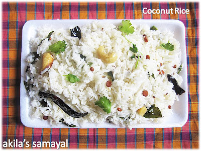
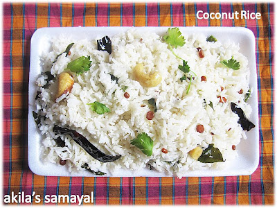
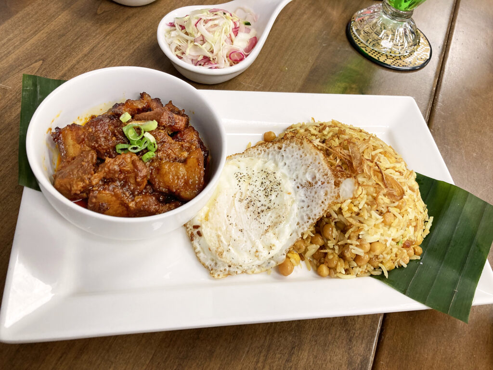
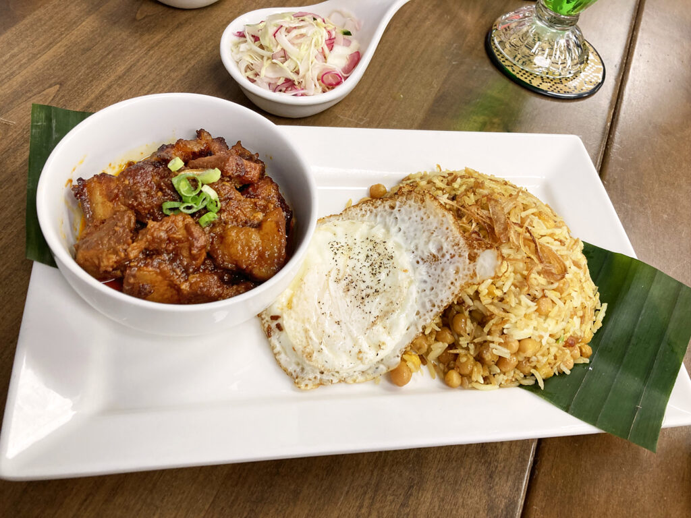

Rice Dishes
🎵 Music to Enjoy with This Page
Fish Rice (Fish Mixed Rice)
Fish Rice is a simple Burmese comfort dish made by mixing flaked cooked fish with steamed rice. Seasoned with onions, garlic, and fish sauce, this dish is savory, aromatic, and lightly spiced. It is often served with fresh herbs and a squeeze of lime.
Full Recipe
| Prep Time | 10 minutes |
|---|---|
| Cooking Time | 20 minutes |
| Servings | 4 |
Nutrients per serving
| Calories | 300 kcal |
|---|---|
| Protein | 22 g |
| Fat | 10 g |
| Carbs | 30 g |
| Sodium | 600 mg |
Ingredients
- Steamed rice – 4 bowls
- Cooked fish (tilapia, mackerel, or salmon) – 250 g
- Onion – 1, thinly sliced
- Garlic – 3 cloves, minced
- Oil – 2 tbsp
- Fish sauce – 1–2 tbsp
- Fresh coriander or spring onion – for garnish
- Lime wedges – optional
Steps
- Heat oil in a pan and sauté onion and garlic until fragrant.
- Flake the cooked fish and add it to the pan; stir-fry for 2–3 minutes.
- Add steamed rice and mix thoroughly with the fish mixture.
- Season with fish sauce and stir until evenly combined.
- Serve hot, garnished with fresh herbs and lime wedges.

Butter Rice
Butter Rice is a fragrant and rich Burmese-style rice dish cooked with butter, giving it a silky texture and subtle flavor. It is commonly served as a side dish alongside curries or grilled meats.
Full Recipe
| Prep Time | 5 minutes |
|---|---|
| Cooking Time | 20 minutes |
| Servings | 4 |
Nutrients per serving
| Calories | 250 kcal |
|---|---|
| Protein | 4 g |
| Fat | 8 g |
| Carbs | 42 g |
| Sodium | 200 mg |
Ingredients
- Steamed rice – 2 cups
- Butter – 3 tbsp
- Salt – ½ tsp
- Chopped parsley or coriander – optional garnish
Steps
- Melt butter in a pan over medium heat.
- Add cooked rice and gently stir to coat each grain with butter.
- Season lightly with salt.
- Heat until the rice is warm and slightly toasted.
- Serve as a side dish, garnished with fresh herbs if desired.
 

Coconut Rice
Coconut Rice is a fragrant and mildly sweet rice dish cooked with coconut milk. It has a soft texture and subtle sweetness, making it a perfect pairing for curries or grilled meats, adding a tropical flavor to the meal.
Full Recipe
| Prep Time | 5 minutes |
|---|---|
| Cooking Time | 20 minutes |
| Servings | 4 |
Nutrients per serving
| Calories | 280 kcal |
|---|---|
| Protein | 4 g |
| Fat | 10 g |
| Carbs | 45 g |
| Sodium | 150 mg |
Ingredients
- Steamed rice – 2 cups
- Coconut milk – 1 cup
- Water – 1 cup
- Salt – ½ tsp
- Sugar – 1 tsp (optional)
Steps
- Combine coconut milk, water, and salt in a pot.
- Add rice and bring to a boil.
- Reduce heat, cover, and simmer for 15–20 minutes until the liquid is absorbed.
- Fluff the rice and serve warm.
 

Pye Pyoke Fried Rice (Soybean & Egg)
Pye Pyoke Fried Rice is a Burmese-style fried rice made with cooked rice, scrambled eggs, and yellow soybeans. Lightly seasoned and aromatic, this hearty dish is rich in protein and commonly enjoyed as a quick lunch or breakfast.
Full Recipe
| Prep Time | 10 minutes |
|---|---|
| Cooking Time | 15 minutes |
| Servings | 4 |
Nutrients per serving
| Calories | 320 kcal |
|---|---|
| Protein | 18 g |
| Fat | 12 g |
| Carbs | 38 g |
| Sodium | 450 mg |
Ingredients
- Cooked rice – 2 cups
- Eggs – 2, beaten
- Yellow soybeans (steamed) – ½ cup
- Onion – 1, finely chopped
- Garlic – 2 cloves, minced
- Oil – 2 tbsp
- Salt and pepper – to taste
- Spring onions – optional garnish
Steps
- Heat oil in a pan and sauté onion and garlic until fragrant.
- Add beaten eggs and scramble until slightly cooked.
- Add soybeans and cooked rice; stir-fry together for 3–5 minutes.
- Season with salt and pepper.
- Serve hot, garnished with chopped spring onions.
Burmese Mixed Rice
Burmese Mixed Rice is a versatile rice bowl made by combining steamed rice with vegetables, protein, and simple seasonings. Light yet flavorful, this dish is often dressed with fish sauce, lime juice, and fried garlic, making it a convenient and comforting meal using leftover ingredients.
Full Recipe
| Prep Time | 10 minutes |
|---|---|
| Cooking Time | 10–15 minutes |
| Servings | 4 |
Nutrients per serving
| Calories | 300 kcal |
|---|---|
| Protein | 18 g |
| Fat | 10 g |
| Carbs | 40 g |
| Sodium | 600 mg |
Ingredients
- Steamed rice – 4 bowls
- Protein (chicken, fish, or tofu) – 150 g, cooked
- Vegetables (carrot, cabbage, bean sprouts) – 1 cup
- Garlic – 2 cloves, sliced and fried
- Fish sauce – 1–2 tbsp
- Lime juice – 1 tbsp
- Oil – 1 tbsp
- Fresh herbs or chili flakes – optional
Steps
- Heat oil in a pan and sauté vegetables until slightly tender.
- Add protein and stir to warm through.
- Toss cooked rice with fish sauce, lime juice, and fried garlic.
- Combine vegetables and protein with the rice.
- Serve in bowls and garnish with fresh herbs or chili flakes if desired.